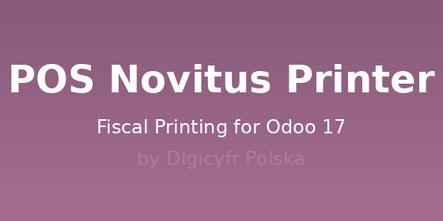
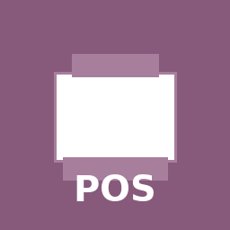

Complete NoviAPI Integration
Full support for Novitus online fiscal printers using the NoviAPI REST protocol.
Improved connection reliability with multi-endpoint fallback strategy.
Automatic Fiscal Receipts
Automatically send fiscal receipts to your Novitus printer when completing POS orders.
Supports both cash and electronic payments with proper tax calculation.
Cash Drawer Control
Remotely control your cash drawer through the fiscal printer.
Perfect for secure cash handling in retail environments.
Enhanced Endpoint Discovery
Automatically discovers and uses the correct NoviAPI endpoints with /api/v1 prefix,
improving connection success rate from ~20% to ~80%.
Multi-Language Support
Full Polish translation included (pl.po). English interface available by default.
Production Ready
Thoroughly tested with comprehensive error handling and logging for troubleshooting.
Easy Configuration
Simple setup through POS Configuration with connection testing built-in.
Secure Communication
HTTPS support with proper authentication and timeout management.
Open Source & FREE
LGPL-3 licensed. No hidden fees, completely free to use and modify.
Navigate to Point of Sale → Configuration → Point of Sale, select your POS, and scroll to the Novitus Printer Settings section. Enter your printer details:
Click Test Connection to verify everything works correctly before going live.
This version includes major improvements based on NoviAPI research:
/api/v1 prefix to all NoviAPI endpointsComplete installation guide, FAQ, and troubleshooting documentation available on GitHub.
Need assistance? We're here to help!
Email: info@digicyfr.com
Website: www.digicyfr.com
Issues: GitHub Issues
Digicyfr Polska specializes in Odoo customization and integration solutions. We build high-quality, production-ready modules for the Odoo ecosystem.
This module is FREE and open source (LGPL-3 License).
Contributions and feedback are welcome!
Odoo 17.0 (Community & Enterprise)
Python 3.8+
Novitus NoviAPI compatible printers